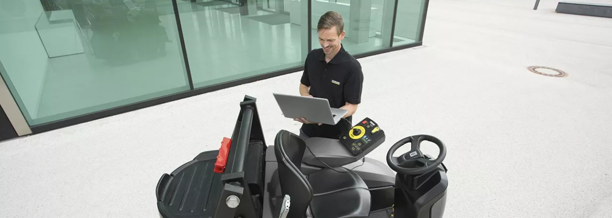
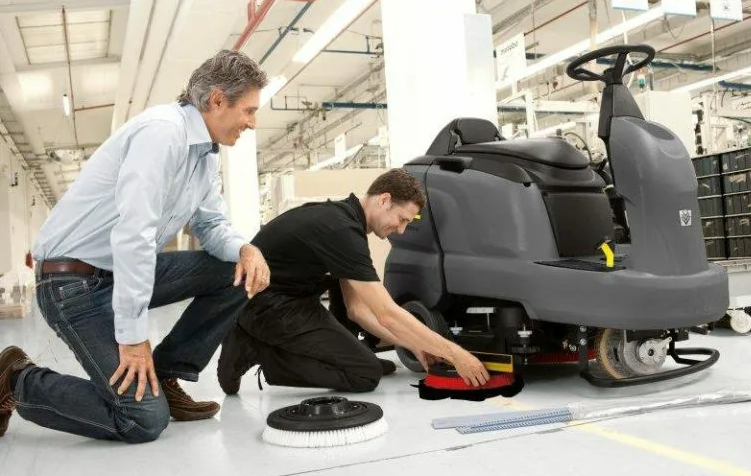
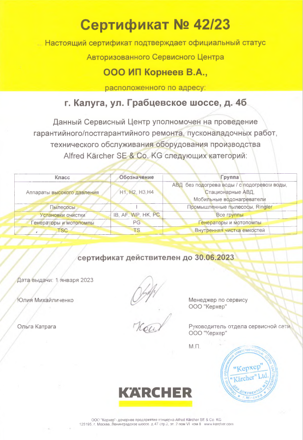

КЕРХЕР ЦЕНТР ВИКТОРИЯ АВТО

Авторизованный сервисный центр осуществляет деятельность по проведению гарантийного/постгарантийного ремонта, пуско-наладочных работ, технического обслуживания оборудования Karcher на территории Калуги и Калужской области с 2013 года. В штате сервисного центра 3 сервисных специалиста, прошедших профессиональную подготовку на базе Керхер Академии и ежегодное плановое обучение по программам Академии. Авторизованный сервисный центр располагает зоной приемки и выдачи с укомплектованным местом сотрудника , зоной хранения оборудования, складом, зоной ремонта. На сервисе постоянно есть необходимый комплект запасных частей для оперативного проведения технического обслуживания и ремонта оборудования.
Все виды гарантийного/ постгарантийного ремонта, пуско-наладочных работ и технического обслуживания осуществляются в соответствии с требованиями, предъявляемыми компанией Керхер для данного вида работ.
Гарантия
Гарантийные обязательства, принятые на себя ООО «Керхер», включают бесплатный гарантийный ремонт оборудования и замену запасных частей и иных принадлежностей, вышедших из строя по вине завода-изготовителя, осуществляемые на территории Российской Федерации в течение установленного гарантийного срока.
Гарантийные обязательства распространяются на:
- новое оборудование;
- фирменные запасные части;
- аккумуляторные батареи и зарядные устройства, приобретённые у официальных представителей ООО «Керхер», и используемые Владельцем на территории Российской Федерации.
Владелец вправе предъявить требования по гарантии, связанные с недостатками оборудования, запасных частей, аккумуляторных батарей и зарядных устройств, только в течение, установленных на них гарантийных сроков и при условии соблюдения Владельцем правил эксплуатации.
Во избежание недоразумений просим Вас внимательно изучать инструкции по эксплуатации оборудования, условия гарантийных обязательств, и проверять правильность заполнения гарантийного талона.
Гарантийный срок на оборудование «Керхер» исчисляется со дня передачи товара потребителю, если иное не предусмотрено договором и на основании выполнения всех вышеперечисленных условий.
Гарантийный срок на оборудование профессионального назначения составляет 12 месяцев. При условии регистрации купленного Вами оборудования на нашем сайте в течение 4-х недель от даты покупки гарантийный срок составляет 24 месяца. Зарегистрируйтесь прямо сейчас!
Гарантийный срок на автомобильные моечные установки CB, RB, RBS, RHP составляет 12 месяца от даты ввода в эксплуатацию, но не более 18 месяцев от даты покупки.
Гарантийный срок на оборудование бытового назначения составляет 24 месяца. Оборудование бытового назначения доставляется в СЦ силами и за счет Владельца, за исключением случаев, предусмотренных действующим законодательством и при предъявлении требования Владельца.
Гарантийный срок на аккумуляторную батарею, изначально установленную на новом оборудовании «Керхер», составляет 12 месяцев (профессиональное оборудование).
Гарантийный срок на зарядное устройство, изначально установленное на новом оборудовании «Керхер», при условии его правильного использования и эксплуатации (отсутствие перепадов напряжения, загрязнении, высокой температуры и т.п.) составляет 12 месяцев.
Гарантийный срок на запасные части «Керхер» составляет 12 месяцев. Настоящий установленный гарантийный срок не распространяется на запчасти в случае их замены при проведении гарантийного ремонта.
Гарантийные обязательства не распространяются на двигатели внутреннего сгорания. Гарантия на ДВС предоставляется их изготовителем.
Специалисты официального СЦ самостоятельно определяют, каким образом следует проводить ремонт оборудования, а также проводить ли ремонт оборудования или замену его частей. При этом все замененные части оборудования остаются в распоряжении официального СЦ.
Для бесперебойной работы оборудования рекомендуем Вам заключить договор о проведении регулярного технического обслуживания (ТО) или нашим официальным дилером в регионе.
Наличие фирменной заводской металлизированной таблички (шильдика) на оборудование обязательно! Пожалуйста, убедитесь в ее наличии и сохраните ее на приборе в течение всего срока службы прибора. Удаление таблички ведет к обезличению прибора и к возможным нарушениям правил его эксплуатации.
Для подтверждения даты покупки прибора при гарантийном ремонте или предъявлении иных предусмотренных законом требований убедительно просим вас сохранять документы о покупке (чек, квитанцию, иные документы, подтверждающие дату и место покупки).
Случаи, на которые гарантия не распространяется.
Изготовитель, продавец не отвечают за недостатки оборудования, запасных частей, аккумуляторных батарей и зарядных устройств компании «Керхер», вызванные:
- Изготовитель, продавец не отвечают за недостатки оборудования, запасных частей, аккумуляторных батарей и зарядных устройств компании «Керхер», вызванные:
- использования оборудование, предназначенного для личных (бытовых, семейных) нужд, для осуществления предпринимательской деятельности либо удовлетворением бытовых потребностей в офисе предприятия, учреждения или организации;
- нарушением правил эксплуатации, хранения и перевозки, указанные в инструкции по эксплуатации;
- использованием нефирменных запасных частей или аксессуаров «Керхер»;
- проведением ремонтных работ и технического обслуживания не в СЦ «Керхер»;
- умышленными или неосторожными действиями Клиента или третьих лиц при обслуживании или эксплуатации оборудования (такими как, например, повреждение или разъединение электрических соединений, проникновение воды внутрь электрических узлов и агрегатов и т.д.);
- загрязнением водой, топливом, воздухом узлов, контакт которых с указанными средами не предусмотрен, или по причине несоответствующего качества указанных сред;
- возникшие вследствие использования иных химических веществ по сравнению с рекомендациями;
- нарушением правил хранения и использования или размещением устройств (приборов) в крайне непригодных условиях: повышенной влажности, запыленности, а также при крайне низкой (холод) или крайне высокой температуре окружающей среды;
- естественным износом деталей, узлов и агрегатов при нормальном режиме эксплуатации:
- аппараты высокого давления: форсунки водяные, пескоструйные сопла, инжекторы, уплотнения насоса высокого давления, уплотнительные резиновые элементы, поршни, клапаны впускные и нагнетательные, повреждения узлов, работающих под высоким давлением, вызванные примесями ржавчины, песка и т.п., механическими и химическими повреждениями поверхности шлангов, смягчением материалов, загрязнением топливного жиклера, топливного насоса, отсутствием масла в трансмиссии привода насоса;
- пылесосы сухой и влажной уборки, моющие пылесосы, пылесосы лопастные: щетки, всасывающие устройства, фильтры разного вида, повреждения и заливания водой всасывающих (впускных) турбин, заливание водой или износ коммутатора;
- механические повреждения или сменные впускных клапанов, забивание нагнетательных насосов модификацией оборудования «Керхер» или изменением его конструкции Клиентом;
- неправильно проведённым ремонтом или регулировкой в случае, если они были проведены не специалистами СЦ;
- повреждениями, возникшими в результате внешнего механического воздействия, а также воздействия внешних факторов, дефектов дорожного покрытия, наездов на препятствия и стихийных бедствий; неисправности, возникшие в результате продолжения работы с поврежденными узлами или элементами оснащения;
- использованием неподходящего топлива, заправочных жидкостей и масел;
- естественным износом деталей внешней и внутренней отделки, в том числе естественные шумы и вибрация, обесцвечивание и выгорание лакокрасочного покрытия, а также загрязнения, потёртости и деформация; не зависящими от Изготовителя причинами, такими как недопустимые государственными стандартами перепады напряжения питания, явления природы и стихийные бедствия, пожар, домашние и дикие животные, грызуны и насекомые, попадание внутрь изделия посторонних предметов или жидкостей, другими подобными причинами.
В случае отсутствия или механического повреждения информационной таблички (шильда) товара и невозможности определения серийного номера товара (если применимо) ООО "Керхер" (и/или Продавец) в целях определения гарантийного срока на товар вправе запросить у Покупателя дополнительные доказательства приобретения товара, иные документы, удостоверяющие факт и условия покупки товара.
Соблюдение рекомендаций и указаний, содержащихся в инструкции по эксплуатации (правилах пользования), поможет избежать проблем в эксплуатации прибора и его обслуживании.
Неисправные узлы приборов в гарантийный период бесплатно ремонтируются или заменяются новыми. Решение вопроса о целесообразности их замены или ремонта остается за службами сервиса.
Техническое обслуживание
Техническое обслуживание оборудования, осуществляется Покупателем в сроки в соответствии с наработкой:
- Аппараты высокого давления с нагревом воды компакт класса (HDSxxxC) должны проходить ТО каждые 3 месяца или каждые 250 моточасов или при включении Контрольной лампочки "Тех. обслуживание", что наступит ранее,
- Аппараты высокого давления с нагревом воды среднего и супер класса (HDSxxxM и HDSxxxS) должны проходить ТО каждые 6 месяцев или каждые 500 моточасов или при включении Контрольной лампочки "Тех. обслуживание", что наступит ранее,
- Аппараты высокого давления без нагрева воды компакт, среднего и супер класса (HDxxxC, HDxxxM HDxxxS) должны проходить ТО каждые 3 месяца или каждые 200 моточасов или при включении Контрольная лампочка "Тех. обслуживание", что наступит ранее,
- Поломойные и поломойно-всасывающие машины, всех классов, должны проходить ТО каждые 3 месяца или каждые 200 моточасов или при включении Контрольная лампочка "Тех. обслуживание", что наступит ранее.
- Пылесосы, приборы для чистки и мытья ковровых покрытий, оборудования для чистки сточных труб (водоотводных желобов), для очистки при помощи пара, головки (бабки) для очистки резервуаров (баков) каждые 6 месяцев
- Полировальные машины, снегоочистители, автоматические моечные установки, каждые 3 месяца
Для некоторых моделей оборудования требуется проведение дополнительных работ по ТО перед 1-ым ТО, информация о таких работах указана в Руководстве по техническому обслуживанию.
